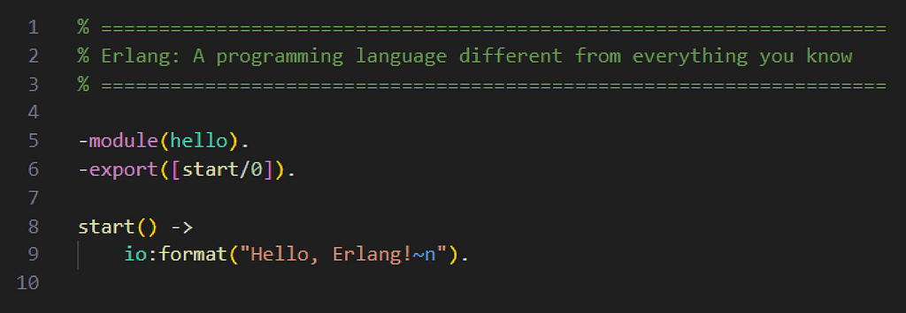
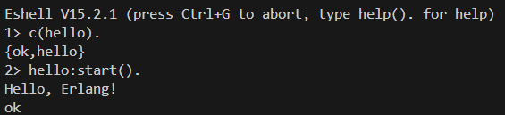

Writing · 17 March 2025 · Scalability · Concurrent Programming · Development
What Do You Need to Know About Erlang

Concurrent and distributed computing has become essential in our digital age. Modern systems must handle multiple tasks simultaneously in an efficient and secure way without compromising data integrity or system performance. In this context, the actor model emerges as a powerful approach to structuring concurrent systems, and the Erlang language stands out as a robust implementation of this model.
Erlang is a functional language developed in the 1980s by Joe Armstrong at Ericsson. It was designed to create fault-tolerant and highly concurrent systems. The language naturally implements the actor model, where each Erlang process can be considered an actor.
The Actor Model
Created by Carl Hewitt and later refined by Gul Agha, the actor model is a paradigm for concurrent computing where actors are the fundamental units of execution. These actors are independent and communicate exclusively through message passing, ensuring a high level of encapsulation and eliminating the need for locks to synchronize state.
Key features of the actor model:
- Total encapsulation: Each actor has its own state, which can only be modified through received messages.
- No locks required: Since actors process one message at a time, there is no competition over internal state.
- Asynchronous communication: Messages are sent without requiring an immediate response, promoting a continuous flow of execution.
- Scalability: Actor-based systems can scale horizontally by distributing workload across multiple machines.
Erlang and the Actor Model
With the goal of implementing the Actor Model, Erlang has this key characteristics:
- Lightweight and isolated processes: Unlike traditional threads, Erlang processes are extremely lightweight and independent.
- Efficient message passing: Communication between processes occurs through asynchronous messages with no shared memory.
- Robust fault tolerance mechanisms: The “Let it crash” philosophy allows processes to fail and be restarted without affecting overall system stability.
Real-World Applications
Erlang’s adoption has grown exponentially in applications requiring high availability and massive concurrency. Some companies and systems using Erlang include:
- WhatsApp: Handles millions of simultaneous connections with low latency Erlang Solutions.
- Facebook Chat: Ensures efficient and scalable communication Facebook Engineering.
- RabbitMQ: One of the most popular messaging systems, built on Erlang.
- Amazon SimpleDB: A distributed database service from Amazon Web Services.
How to Compile and Run an Erlang Program
It is very easy to execute an Erlang program, although its functional syntax can be a little scary in the beginning. To write and run a simple Erlang program, follow these steps:
1. Install Erlang from https://www.erlang.org/downloads.
2. Create a file named hello.erl with the following content:
-module(hello).
-export([start/0]).
start() ->
io:format("Hello, Erlang!~n").
3. Open the Erlang shell by running erl in your terminal.
4. Compile the module:
c(hello).
5. Run the function:
hello:start().
This will print “Hello, Erlang!” to the console:

Ok, it looks simple somehow. Where is the catch?
Erlang makes concurrency easy, but it has a steep learning curve due to its functional paradigm and unique syntax. Developers accustomed to imperative languages like Python might struggle initially with pattern matching, immutability, and recursion, which replace traditional loops and variable assignments. Additionally, debugging can be challenging in highly distributed systems where processes communicate asynchronously.
Main Differences Between Erlang and Python
✅ Paradigm
- Erlang: Functional, with an emphasis on concurrency.
- Python: Multi-paradigm (object-oriented, procedural, and functional).
✅ Concurrency Model
- Erlang: Actor model with lightweight processes.
- Python: Threads and multiprocessing, limited by the Global Interpreter Lock (GIL).
✅ State Management
- Erlang: Immutable data, no shared state.
- Python: Mutable state, object-oriented approach.
✅ Error Handling
- Erlang: “Let it crash” philosophy, with supervisor processes.
- Python: Traditional try-except exception handling.
✅ Performance
- Erlang: Optimized for concurrent and distributed systems.
- Python: Better suited for single-threaded applications and general scripting.
✅ Use Cases
- Erlang: Telecom, messaging systems, real-time applications.
- Python: Web development, data science, automation.
Conclusion
The actor model and the Erlang language provide powerful solutions to the challenges of concurrent and distributed programming. Developers can create more resilient, scalable, and efficient systems by adopting this paradigm. With the growing demand for distributed applications, Erlang remains a relevant and innovative choice for modern architectures.
Have you ever worked with concurrent programming? What was your approach?
References
- Agha, G. A. (1985). Actors: A model of concurrent computation in distributed systems. Massachusetts Institute of Technology. Link
- Armstrong, J. (2007). Programming Erlang: Software for a Concurrent World. Pragmatic Bookshelf. Link
- Erlang Solutions. (2016). How WhatsApp Scaled with Erlang. Link
- Facebook Engineering. (2010). The Architecture of Facebook Chat. Link
- Hamilton, J. (2007). Amazon SimpleDB: A Highly Available, Scalable, and Flexible Data Store. Link
- Hewitt, C., Bishop, P., & Steiger, R. (1973). A universal modular actor formalism for artificial intelligence. Proceedings of the 3rd International Joint Conference on Artificial Intelligence. Link
- Videla, A., & Williams, J. (2012). RabbitMQ in Action: Distributed Messaging for Everyone. Manning Publications. Link